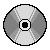
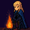

Inspirationsbild: https://www.pixilart.com/art/compact-disc-bc099f8f302f?ft=challenges&ft_id=1301
Basierend auf einem KI-generierten Inspirationsbild

Flächen: Tropfen, Horn, Kirschblütenblatt
Quellen:
http://www.3d-meier.de/tut3/Seite0.html
Fläche wechseln: „B“ • Rotation: „R“ • Linien/Füllung/Modus: „L/F/M“
← / →: Kamera um die Szene drehen n / Shift + n: Radius vergrößern/verkleinern m : Füllung/Linien umschalten
Rekursionstiefe: 0